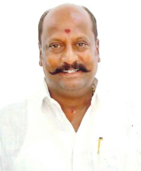
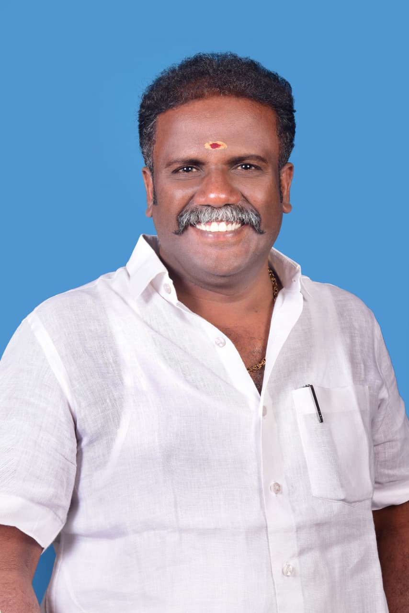
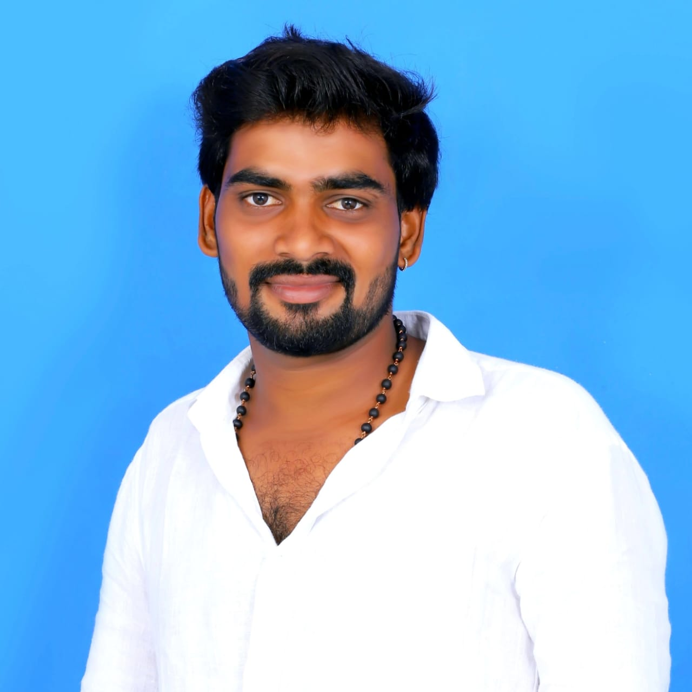

எங்கள் தலைவர் தளபதி விஜய் பற்றி

தமிழக வெற்றிக் கழகத்தின் (TVK) நிறுவனர் தளபதி விஜய் அவர்கள் சமூக நீதி, அரசியல் மாற்றம் மற்றும் தமிழக மக்கள் முன்னேற்றம் குறித்த ஆழ்ந்த நம்பிக்கையுடன் செயல்படும் ஒரு துருவ நட்சத்திரம்.
தளபதி விஜய் அவர்களின் தலைமை சிறப்பம்சம் என்பது தாழ்த்தப்பட்ட மக்களை அதிகாரப்படுத்தவும், அனைவருக்கும் சமநிலை வாய்ந்த வளர்ச்சியை முன்னெடுப்பதிலும் உறுதியாக செயல்படுவதாகும்.
பொருளாதார சமநிலை, தரமான கல்வி, மற்றும் சீரான வேலைவாய்ப்புகளுக்கான வலியுறுத்தலுக்காக அவர் தொடர்ந்து குரல் கொடுத்துவருகிறார்.
அவருடைய நேர்மை, வெளிப்படை தன்மை மற்றும் ஒற்றுமையான நடவடிக்கைகளின் மீது உள்ள நம்பிக்கை, தளபதி விஜய் அவர்களை எதிர்கால தலைமுறைக்கு முன்னோடியாக மாற்றியுள்ளது.
தமிழக வெற்றிக் கழகம் மூலம், அவர் தமிழ்நாட்டின் அரசியல் களத்தை மாற்றும் நோக்கத்தில், நேர்மை, முன்னேற்றம், சமூக நீதி ஆகியவற்றை மையமாகக் கொண்டு செயல்படுகிறார்.
தவெக வின் கொள்கை பாடல்
TVK கொள்கை பாடல் காண இங்கே கிளிக் செய்யவும்
மதிப்பிற்குரிய பொறுப்பாளர்கள்

திரு. Bussy N. ஆனந்த்

திரு.S.R பார்த்திபன்

திரு.செந்தில்குமார். கே
